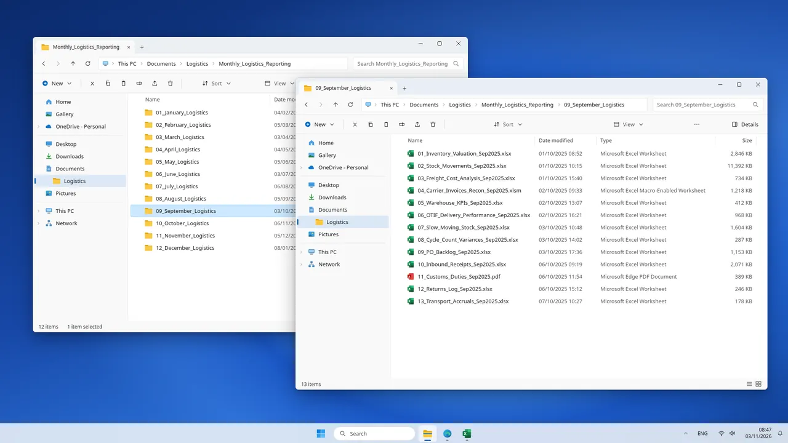
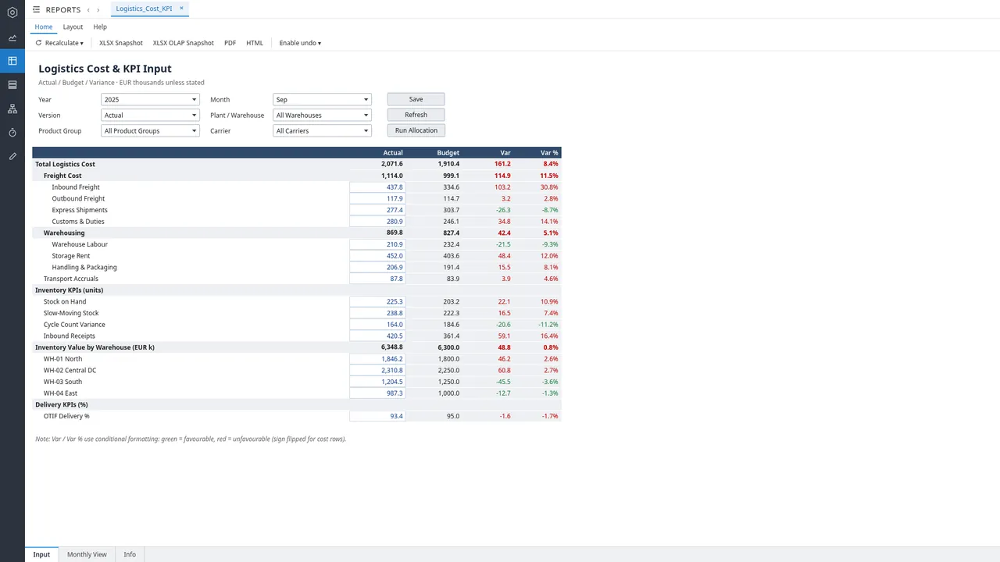
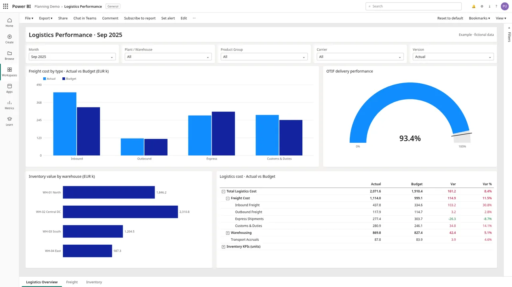
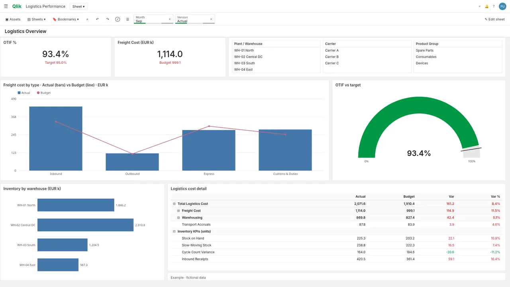

Typical scenario
Logistics reporting
Monthly pack in 2 days, OTIF visible on day 2 Estimated impact
Typical monthly logistics reporting at a mid-size industrial components manufacturer: about EUR 250m revenue, 4 warehouses, 3 carriers.
- Jedox
- Snowflake
- Power BI
- Qlik Sense
- Excel VBA
Before and after Estimated impact
BeforeAfter
Challenge
- Reporting stitched together from ERP, WMS exports, carrier CSVs and Excel.
- Carrier invoices matched by hand every month.
- OTIF and inventory logic changed from month to month.
Impact
- Operations act on OTIF in the same week.
- One definition of inventory and OTIF across sites.
Solution
- JedoxLogistics input form: cost rows, inventory by warehouse and OTIF against budget.
- SnowflakeStock movements, receipts and carrier invoices in one model.
- Power BIFreight cost by type, OTIF gauge, inventory by warehouse and cost matrix.
- Qlik SenseKPIs, filter panes, freight combo chart and cost pivot table.
- Excel VBANormalises carrier invoice files that still arrive as Excel.
Screenshots
Mockups with fictional data.







